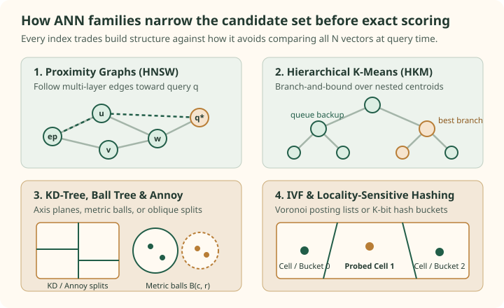

ANN methods: define the target before choosing the index
An approximate index can be fast and still solve the wrong task. Before discussing graphs or quantizers, specify which vectors are eligible, how they are scored, and how many results are needed. Those choices define the exact answer that approximation will be compared with.
ANN means approximate nearest-neighbor search. Some families provide formal approximation guarantees under particular assumptions. HNSW instead uses a practical graph-search heuristic; a measured recall value is not a proof that every query meets an approximation bound.
Name the exact target
Let $q\in\mathbb R^d$ be a query, $x_i$ a stored vector, and $E(q)$ the eligible ID set. For a distance where smaller is better, the exact target is:
The minus sign lets top-K mean largest score. Equivalently, choose the K smallest distances. Eligibility may encode a tenant, date range, document type, or application policy. Apply the same predicate to the exact baseline and the approximate run.
If fewer than K items are eligible, the target is smaller. If none are eligible, a valid retriever can return no results; overlap recall has no nonzero denominator. Report that case separately rather than inventing a perfect or zero recall value. Duplicate result IDs must not count as extra neighbors.
Exact search over N dense vectors requires $O(Nd)$ coordinate work for straightforward scoring. Selecting the best K adds selection work; a heap can avoid sorting all N distances. A flat index can still be competitive when the corpus or eligible subset is small, queries are batched, or optimized vector arithmetic fits the hardware well. Measure it before assuming a more complex index wins.
A metric choice can change the winner
Use query $q=(1,0)$. These four vectors are constructed to distinguish three objectives. Inner product and cosine are maximized; squared L2 is minimized:
The query is fixed. Scores are rounded only for display.
| ID and vector | Inner product | Cosine | Squared L2 |
|---|---|---|---|
| A = (1, 0) | 1 | 1 | 0 |
| B = (2, 2) | 2 | 0.7071 | 5 |
| C = (0, 3) | 0 | 0 | 10 |
| D = (-1, 0) | -1 | -1 | 4 |
Scroll horizontally to compare the columns. Keyboard: focus the table, then use the left and right arrow keys.
Raw inner product picks B, because its larger norm compensates for weaker alignment. Cosine picks A. Raw squared L2 also picks A, but its second choice is D rather than B: moving two units left is a smaller coordinate displacement than moving one unit right and two units up.
When both vectors are normalized to unit length, the relationship becomes:
Thus normalized inner product, cosine, and normalized L2 give the same exact ordering. This is a statement about normalized vectors and exact scores. It does not make the raw scores equal, and approximate indexes or quantization can introduce their own differences. A zero vector has undefined cosine; validate it before normalization.
Faiss returns squared L2 for its L2 metric. hnswlib's l2 also returns squared L2, while its ip reports 1 - dot_product. Faiss inner-product search returns the inner product itself. The rankings can agree while the API values and their preferred direction differ.
Run the exact two-neighbor calculation
q = (1.0, 0.0)
items = {"A": (1.0, 0.0), "B": (2.0, 2.0),
"C": (0.0, 3.0), "D": (-1.0, 0.0)}
scored = [(sum((a-b)**2 for a, b in zip(q, x)), item)
for item, x in items.items()]
print(sorted(scored)[:2])
# [(0.0, 'A'), (4.0, 'D')]This full sort is a small reference calculation, not a recommended large-corpus implementation. Lower IDs break equal-distance ties here because the tuple sort also compares the ID.
There are two places to lose the exact answer
An index may avoid scoring most of the corpus, approximate the scores, or do both. That distinction matters when diagnosing a miss.
| Mechanism | Work avoided | Where error can enter |
|---|---|---|
| Graph navigation (HNSW) | Visit promising nodes along a navigable small-world graph rather than every vector | A useful detour node is never reached or expanded before the beam terminates |
| Hierarchical trees (HKM, KD-tree, Ball tree, Annoy) | Descend multi-way centroids, coordinate cuts, metric balls, or random hyperplanes to leaves | A split boundary separates the query from its neighbor when leaf budget is capped |
| Flat Voronoi partitions (IVF) | Scan only the posting lists of the nearest coarse centroids | The Voronoi cell containing a true neighbor lies outside the top nprobe centroids |
| Randomized hash projections (LSH) | Inspect only vectors colliding in K-bit hash buckets across L tables | A random hyperplane with a tiny query margin flips a hash bit and misses the bucket |
IndexHNSWFlat combines multi-layer graph candidate discovery with uncompressed vector storage. IndexIVFFlat probes selected coarse Voronoi lists and scores exact stored vectors inside those lists. Hierarchical trees (HKM, KD-trees, Ball trees, and Annoy) recursively split the space so a query inspects only a small fraction of leaves.
Reranking discovered candidates with full-precision vectors can correct score ties within that candidate set, but it cannot recover an ID that candidate discovery never visited. Increasing the candidate budget (efSearch, L_max, search_k, or nprobe) trades additional distance evaluations for fewer boundary misses.
Compare the popular ANN families
No single ANN index dominates across dimensional regimes, update rates, and memory budgets. Compare how each of the seven core ANN methods partitions or wires the space and exposes tuning knobs:


Seven foundational ANN methods across proximity graphs, hierarchical trees, Voronoi partitions, and locality-sensitive hashing.
| Method family | Partition / routing structure | Pruning or search rule | Primary build and query knobs | Characteristic miss mode |
|---|---|---|---|---|
| HNSW | Multi-layer navigable small-world proximity graph | Greedy upper-layer zoom + two-heap beam search | M, efConstruction, efSearch | Frontier stops before expanding a detour bridge |
| Hierarchical K-Means (HKM) | Recursive multi-way k-means clustering tree | Best-first min-heap over child centroid distances | Branching Kb, leaf size S_max, L_max | Outlier pulls a subtree centroid away from a boundary neighbor |
| KD-Trees | Binary axis-aligned coordinate median splits | Exact L2 box distance vs. query ball radius | Leaf size, max_leaves budget | In high d, query hypersphere intersects almost every coordinate split |
| Ball Trees | Nested metric hyperspheres B(c, r) via two-pivot splits | Triangle inequality lower bound d(q, c) - r > R | Leaf size, metric d, max_leaves | When intrinsic dimension is high, ball radii stay large and overlap |
| Annoy (Random Projection Trees) | Forest of random two-point equidistant hyperplane trees | Shared max-heap ordered by hyperplane margin | n_trees, search_k | Query with small margin lands on opposite side of split in too many trees |
| IVF (Inverted File Index) | Single-layer coarse k-means Voronoi cells + posting lists | Top-nprobe nearest coarse centroids | nlist, nprobe | True neighbor sits across a Voronoi bisector in an unprobed cell |
| Locality-Sensitive Hashing (LSH) | Data-oblivious K-bit random projections across L tables | Bucket union across L tables + margin multi-probe | K bits, L tables, multiprobe count | Sign flip on a hyperplane where |r^T q| is near zero |
Scroll horizontally to compare the columns. Keyboard: focus the table, then use the left and right arrow keys.
Follow the dedicated ANN method guides
Each method guide below starts with a small, fully checked numerical puzzle where a naive setting misses the true nearest neighbor, illustrates the geometry with a diagram, derives the governing equations, and verifies the recovery mechanism in runnable Python code.
Start with a four-vector routing puzzle, replay the HNSW search, and follow six focused notes through hierarchy, two-heap search, diversity pruning, native benchmarks, and RAG filters.
Build a recursive k-means clustering tree, trace why an outlier pulls a centroid away from a boundary neighbor, and recover the exact result with a branch-and-bound priority queue.
Partition space with axis-aligned hyperplanes, trace exact branch-and-bound pruning with a query hypersphere, and see why high dimensions force coordinate splits to intersect the search ball.
Wrap point sets in nested metric balls B(c, r), apply the triangle-inequality lower bound d(q, c) - r to prune subtrees under any metric, and adapt to intrinsic manifold dimension.
Partition points with random two-point equidistant hyperplanes, combine multiple trees to prevent boundary misses, and traverse branches with a shared margin priority queue.
Construct a Voronoi partition with coarse k-means centroids, trace why nprobe=1 misses a neighbor across a cell boundary, derive residual vectors, and quantify posting-list imbalance.
Derive the random-hyperplane collision probability from the angle between vectors, shape the S-curve with K-bit hashes and L tables, and compare multi-probe LSH against learned partitions.
Measure the index against the task you declared
For exact reference IDs $T_k(q)$ and approximate IDs $A_k(q)$, define overlap recall for a nonempty reference:
This is agreement with exact vector search. It is not recall of all human-relevant documents. The names can look similar while answering different questions. Freeze the corpus, embedding version, normalization, eligibility rule, K, and tie convention before computing either run.
Use held-out queries instead of querying every indexed vector for itself. Self-query experiments can be useful implementation checks, but a zero-distance self match can make a workload unusually easy. Report the number of queries, result-fill rate, and per-query distribution rather than only a rounded mean.
Keep timer boundaries explicit. Index-only latency starts with an embedding ready and ends when IDs and scores return. A complete RAG request can also include queueing, embedding, filters, transfers, reranking, and generation. Memory likewise has several meanings: vector payload, serialized index size, resident memory, and peak build memory are not interchangeable.
The vector-search benchmark guide develops those measurement boundaries. The retrieval diagnosis guide connects approximation to judged usefulness.
Check the operating assumptions
If cosine and L2 disagree, must the ANN algorithm be broken?
No. Check normalization, zero vectors, score direction, and whether both runs use the same metric. Raw L2 and raw inner product are different objectives. For normalized exact scores the ordering relation above holds; approximate search can still disagree.
Can an exhaustive scan still be approximate?
Yes. A scan over compressed vector codes can score every code while approximating the original vectors' distances. Exhaustiveness describes candidate coverage; it does not establish score fidelity.
What makes a reported recall@10 impossible to reproduce?
Missing query/corpus data, changing embeddings or filters, an unspecified exact reference, inconsistent ties, or an unstated cutoff can each change the result. A library name and an ef value alone do not define an experiment.
Sources and next reading
- Faiss indexes, candidate selection, encodings, and supported operations.
- Faiss metrics, normalization and score conventions.
- hnswlib 0.8.0 API, squared L2 and inner-product distance conventions.
- Malkov and Yashunin's HNSW paper and Pinecone's HNSW guide.